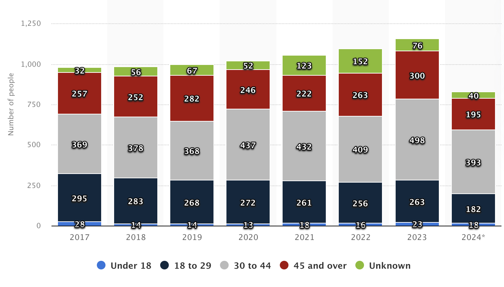
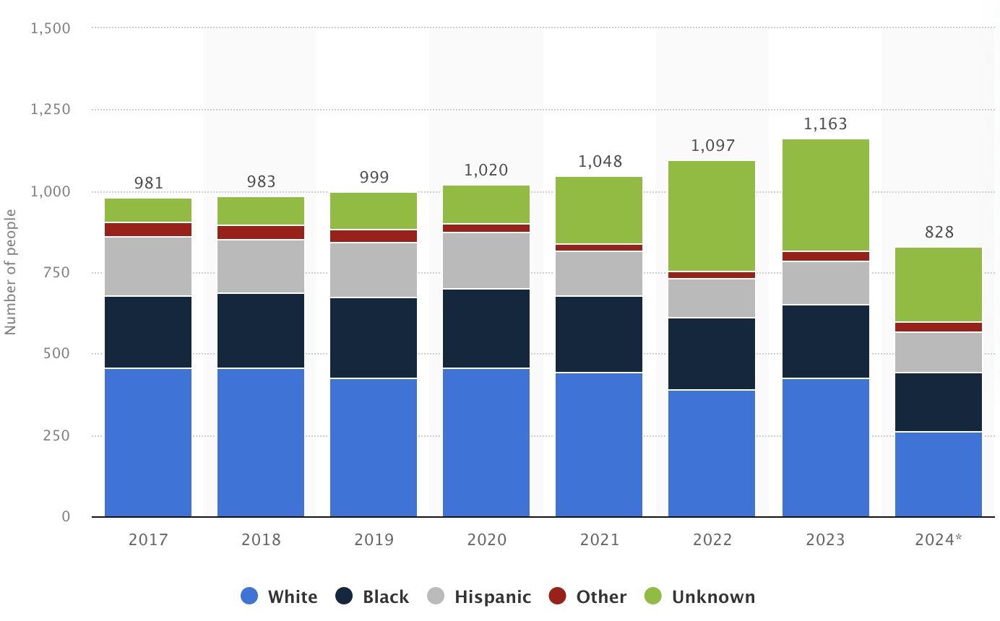
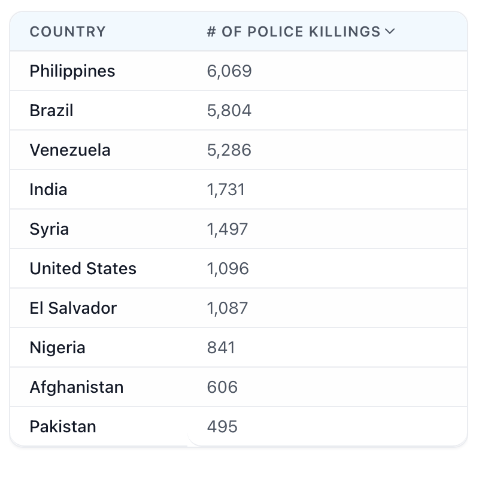

Home
Cases
Stand Together
Report

A chart representing the age of the muredered victims

A chart representing the amount and the race of the muredered victims

Table representing countries by police killing per year (outdated, however still relevant for the most countries)